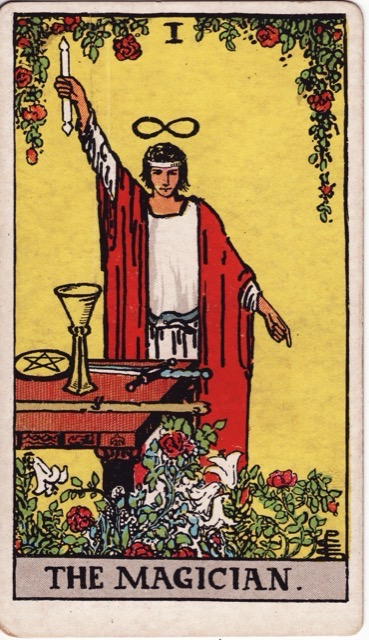
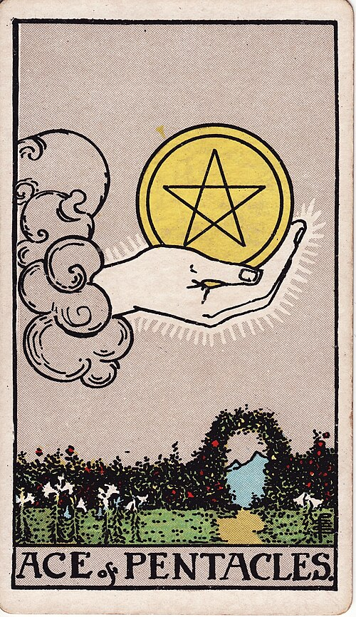

A teaching workspace · Tarot
Learning Tarot
A course built around a single deck — learning to read the Rider–Waite–Smith cards aloud and justify every sentence, with documented history and occult doctrine taught side by side and always labelled as which is which.




Every page in this workspace follows one convention, because tarot's literature blurs exactly this line at every opportunity:
Claims backed by dated evidence, such as a 1440 ledger, a surviving deck or a printed book, and always carrying a citation.
Tradition, doctrine or outright fabrication, taught properly but always with a note of who asserted it and when.
Lessons
The lessons are short, hands-on, and meant to be taken with the physical deck within reach. Those still unwritten form the planned arc, and the next one gets built whenever you ask for it.
- 01 Where Tarot Comes From Three historical layers — game, myth, doctrine — with the Magician as the case study, and the decoder the rest of the course runs on.
- 02 The Anatomy of the Deck 22 trumps over four suits of fourteen: sort the whole deck without hesitating, and read a card's register from structure alone.
- 03 The Four Suits as Four Kinds of Problem Wands, Cups, Swords, Pentacles as will, feeling, mind and matter — suit names the kind of problem, never the topic.
- 04 Numbers 1–10 as a Narrative Arc Every suit tells the same ten-chapter story — read a number card you have never studied from two facts alone.
- 05 Why the Seven of Swords Shows a Thief The separate ancestries of a minor card's meaning — Etteilla's word-lists, Book T's formula, Smith's borrowed pictures — and the rule: stage from the number, plot from the picture.
- 06 The Court Cards as Four Postures Rank as a posture toward the suit's business — the ladder from Page to King, the horse test, and the person / self / approach procedure.
- 07 The First Eleven Trumps Trumps I–XI as a parade of powers — people by station, then the forces above rank — with the Strength–Justice swap finally explained.
- 08 The Suit Cards by Heart The memorisation turn — one master sheet for all 56, a self-graded drill in two directions, and the schedule that makes it stick.
- 09 The trumps, second sittingUp next XII–XXI and the Fool through the three-layer decoder.
- 10 Reversals And the honest case that they are optional.
- 11 Three-card spreads Position as grammar; the first full reading.
- 12 The Celtic Cross Waite's own ten-position spread, from the Pictorial Key.
- 13 Reading aloud Narrative construction, hedging honestly, and not pretending to predict.
Reference sheets
These sheets hold the compressed residue of the lessons in a dense, printable form, designed to live next to the deck rather than be read once.
- · The Three Layers of a Tarot Card The timeline from the 1370s imported suits to the 1909 deck, with each layer's key dates and documents.
- · A Map of the 78 Cards The full inventory for sorting, counting and finding strays — keep it under the deck.
- · Glosariusz — the Polish Vocabulary of Tarot Polish names for every part of the deck and the act of reading, with variants — for moving between Polish conversation and English sources.
- · Where a Minor Card's Meaning Comes From The dated streams behind every number-card meaning, the picture-first reading method, and the running audit of where formula and picture disagree.
- · The Decks Beyond the RWS The three deck systems, the RWS family, the modern bestsellers and the Renaissance originals — and how much of the course transfers to each.
- · The Twenty-Two Trumps The trump sequence card by card — 1450 identity, Book T overlay, Waite's printed meaning, and what to point at. First eleven rows filled; the rest arrive with the second sitting.
- · The Sixteen Courts The rank-by-suit grid with Waite's own phrases, the family Book T hid in the ranks, and the three questions that decide who the person is.
- · The Fifty-Six Suit Cards The master lookup: every suit card's 1888 title, Smith's scene in one sentence, and the meaning to say at the table — the sheet the lesson-8 drill grades against.
This course has a teacher. Open a session in this directory and ask for the next lesson, a rerun of a drill, the source behind any claim — or anything a page left unclear. The curated source list lives in RESOURCES.md, and when you want other humans, r/tarot is the room to start in.